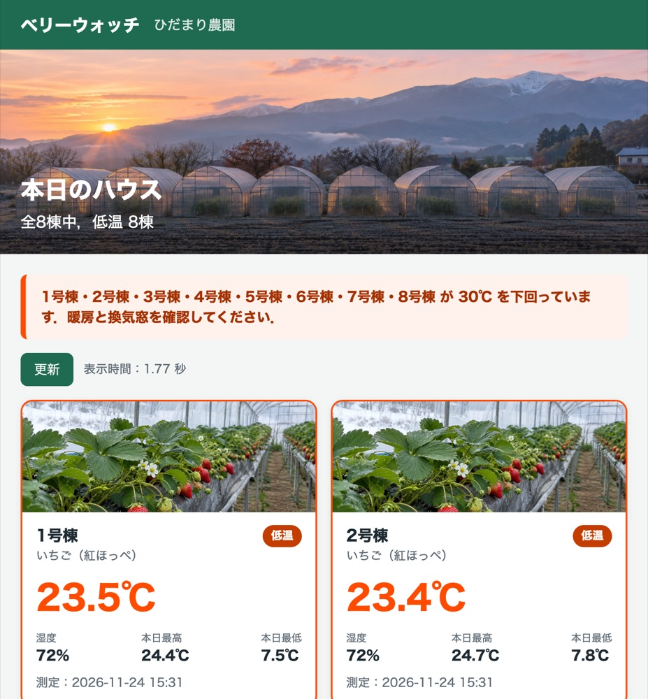

温度は同じ．なのに，全部赤い．
何を1つ変えた？
答えは ⑤ で
OS＝PC の土台
家＝OS，家具＝アプリ．アプリは OS の上で動く
オレンジ：この勉強会の Ubuntu．点線の語は，マウスを合わせると説明
インターネットのサーバーで，一番多い OS は？
だから本番に近い Ubuntu で，アプリを動かす
WSL2＝Windows の家の中に，Linux の部屋を作る仕組み
家を建て替えずに，Ubuntu の部屋でアプリを動かせる
PC の中の地図
アプリと道具は，どこにある？
← フォルダを共有
VS Code で app.py を直して保存 → 箱の中のサーバーが読み直す → ブラウザで確認
アプリの起動
VS Code▸ data
▸ static
app.py
sensor.py
名前@PC名:~/berry-watch$ python3 sensor.py 1号棟：10.2℃，75.3% を送信
bash
今回から，サーバーもセンサーも VS Code の下のターミナルで
-
Ubuntu で実行 → VS Code が開く
cd ~/berry-watch && code . -
メニュー「ターミナル」→「新しいターミナル」（1つ目＝サーバー）
docker compose up -
ターミナル右上の ＋（2つ目＝センサー）
python3 sensor.py -
ブラウザで localhost:8000
うまくいかないとき
No such file or directory
→ アプリが未取得．第2回の「アプリの取得」から
左下に「WSL: Ubuntu」が出ない
→ VS Code を閉じて，1-1 をもう一度
permission denied（docker）→ メンターと確認
8棟の温度の表示
変数＝名札付きの箱
= は「箱に入れる」．< は「より小さい？」
画面に出るのは？
temperature の箱を 8.0 にしたら？
2問の答えを確認
if＝分かれ道
字下げした行が，その道の中身
temperature が 8.0 なら？
答えを確認
アプリの中の分かれ道
VS Codeapp.py の上の「設定」と，Ctrl + F →「is_cold」
limit の箱の正体が COLD_LIMIT．判定の答えに is_cold という名前を付けて，画面へ
COLD_LIMIT を 30.0 にしたら，一覧は？
黄色の2行を発見
30 に変えて，元に戻す
VS Code8.0→30.0→ Ctrl + S（保存）ブラウザの「更新」→ 最初の右の画面に
-
左端の上から3つ目 ソース管理 →
app.py変えた行が赤と緑で並ぶ
-
app.pyにマウス → ↶ →「破棄」→「更新」8.0 に戻り，いつもの一覧に
全部赤 → 元に戻った
判定を書く
このページで実行（インストールなし）．Tab で字下げ → ▶ で判定 → × は出力を見比べる
問1 低温の判定
8.0 未満なら 低温，それ以外は 正常
7.5
低温
ヒント
③ のコードとほぼ同じ．limit の代わりに 8.0
解答例
問2 3段階（続き）
8.0 未満は 低温，10.0 未満は 注意，それ以外は 正常
9.2
注意
ヒント
道を3本に：elif 条件:（そうでなく，もし〜なら）
解答例
問1 が全問正解
手応えメモ
このブラウザに保存．第11回で並べる
3つとも記入
 第3回 完了
第3回 完了
赤い札の仕組みが分かった
- 変数＝名札付きの箱
- if＝分かれ道
- 基準を1つ変えると，全部が変わる
終了
各ターミナルで Ctrl + C → VS Code・ブラウザを閉じる